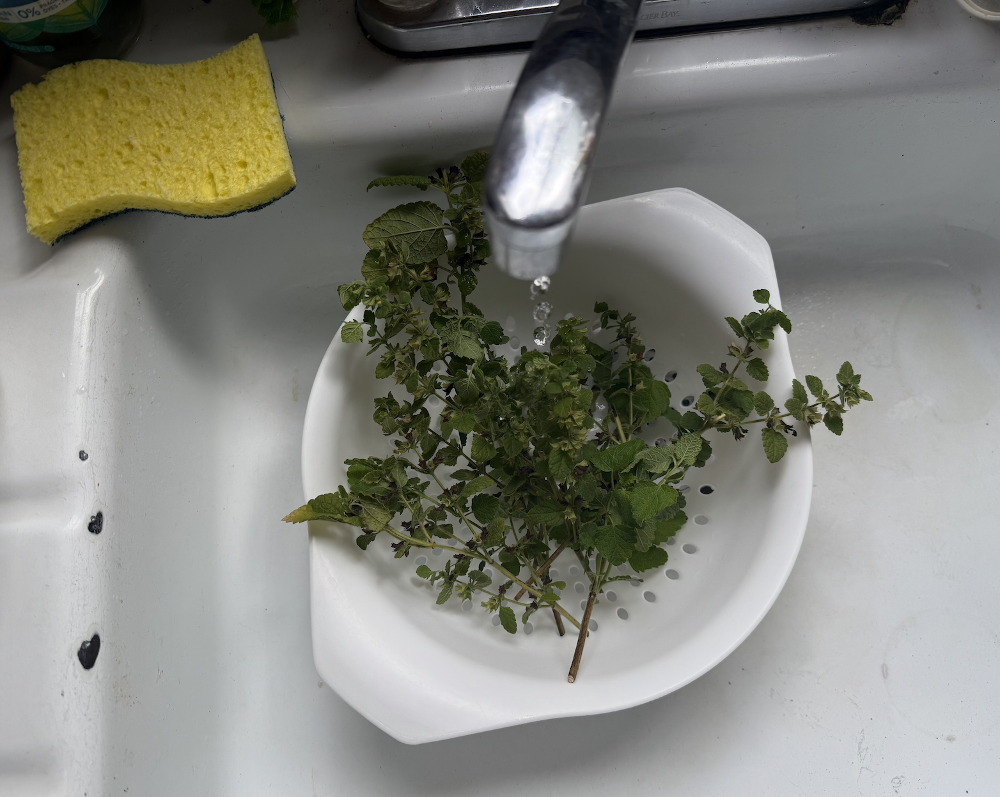
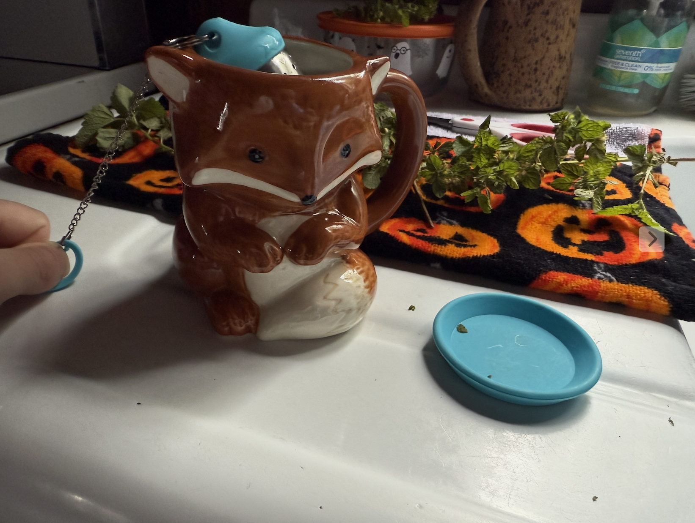
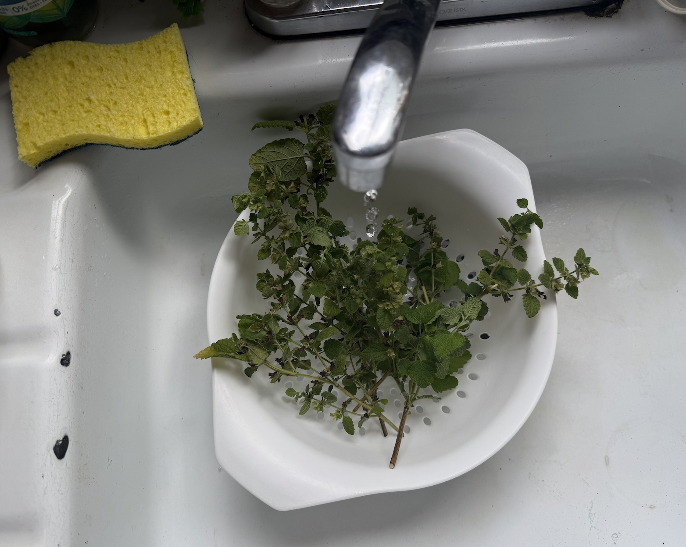
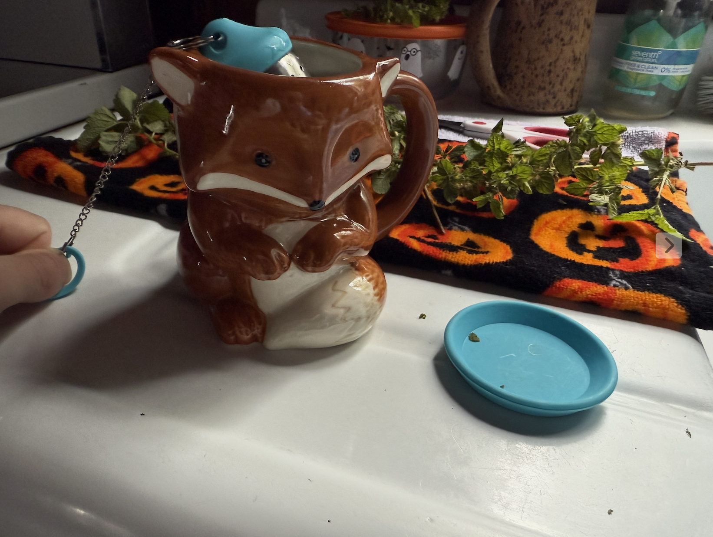

Short Reflection
by dead-elvin
October 15, 2025
Update On Progress
This week, I spent some more time with the plants. I sketched myself with my cat and the plants.
Additionally, I harvested some lemon balm mint and had a cup of tea with some fresh leaves. I’m now drying the remainder of it for future use in teas (and potentially salves, tinctures, etc. when I start learning to make those), as well as the common plantain leaves and self-heal stems and flowers.
 



I was also aware of a few other herbs in my yard I want to work with and gather, such as dandelions, yarrow, and feverfew.
I grabbed a leaf stock from a tree of heaven to use in a charm, but left alone the holly for now – come Christmastime I’ll do a small craft, spell, or charm with it. I’d also like to make the yard inviting for the Little People over winter.